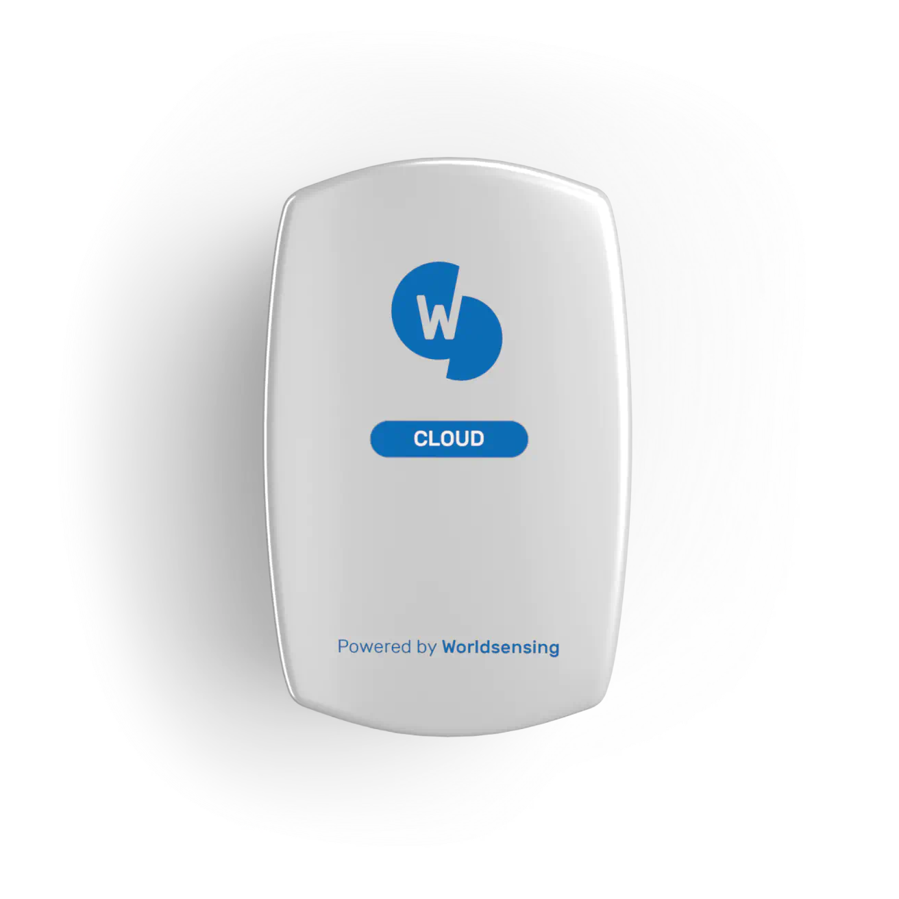

4G Rugged Gateway — Carrier-Class IoT Connectivity
Central communication hub for wireless sensor networks. Carrier-class LoRaWAN gateway with 4G cellular backhaul, designed for harsh outdoor environments — connecting sensors in mines, tunnels, bridges and remote infrastructure.

4G Rugged Gateway Cloud
Multi-gateway networks for data redundancy
Cloud Managed
4G Rugged Gateway Edge
Local network management via CMT Edge
Edge Managed
Gateway Edge 915R
902-928MHz band for North America
915 MHz BandReliable Connectivity for Smart Monitoring
The 4G Rugged Gateway is a carrier-class, outdoor LoRaWAN gateway designed to provide robust cellular connectivity for remote monitoring in harsh environments. It serves as the primary communication hub for Worldsensing edge devices, enabling high-volume bidirectional data messaging from remote locations.
Available in three variants — Cloud (multi-gateway redundancy), Edge (local single-network management), and Edge 915R (902-928MHz band for North America) — to suit any deployment architecture.
3G/2G fallback for uninterrupted service
Local validation and buffering on-board
EMEA, Americas, APAC frequency bands
Single cable for power + data
Key Benefits
Ensures uninterrupted data transfer from remote sensors via 4G LTE with automatic 3G/2G fallback.
Processes events locally for faster alerts and reduced latency. Local data buffering prevents loss during outages.
IP68-rated weatherproof enclosure withstands harsh outdoor and industrial conditions.
Private isolated local networks or multi-network cloud management — choose the architecture for your project.
What Makes the 4G Rugged Gateway Different
Field-proven gateway technology designed for large-scale geotechnical, structural and environmental monitoring networks.
Long-Range LoRaWAN
Up to 15 km wireless coverage using multi-spreading factor technology. Connects hundreds of sensors across bridges, dams, slopes and remote infrastructure with a single gateway.
4G Cellular Backhaul
Worldwide 4G module with 3G/2G fallback ensures data reaches the cloud even in areas with limited cellular coverage. Ethernet option also available for wired connections.
High Scalability
A single gateway network reliably supports 1000+ wireless devices. Cloud variant handles up to 300 messages/min; Edge variant handles up to 30 messages/min for single-network deployments.
Cloud & Local Management
CMT Cloud for multi-gateway, multi-site oversight. CMT Edge for private, isolated local deployments where data stays on-site — ideal for high-security environments.
IP68 Rugged Enclosure
Industrial-grade IP68-rated housing for full submersion protection. Operating temperature range of −40°C to +60°C for the harshest field conditions.
Simple PoE Power
Power over Ethernet (PoE) supports both mode A and B — a single cable delivers power and data. USB-C also available for local access. PoE injector included in the kit.
Where the 4G Rugged Gateway Deploys
Deploy the 4G Rugged Gateway across mining, transport, construction and environmental monitoring projects.
Mining Operations
Reliable surface and underground communications for slope stability, seismic and groundwater monitoring across open-pit and underground mines.
Transport & Bridges
Long-range gateway networks covering road and rail corridors — continuous sensor data from bridge decks, tunnels and retaining structures.
Construction Sites
Temporary and permanent deployments for settlement, vibration and ground movement monitoring throughout the construction lifecycle.
Dam & Reservoir
Wide-area gateway coverage for large embankment and concrete dam instrumentation networks — piezometers, tiltmeters and GNSS in a single network.
Geotechnical Slopes
Wireless sensor networks across remote terrain — landslide early warning, slope stability and rainfall monitoring without cellular coverage dependency.
Environmental Monitoring
Flood early warning systems, weather kits and environmental sensor arrays connected over long-range narrowband with minimal infrastructure.
4G Rugged Gateway Specifications
| 4G Rugged Gateway Specifications | |||||||||||||||||||||
|
Protocol: LoRa/LoRaWAN
Backhaul: 4G + Ethernet
Bands: 863-928MHz
|
Sensitivity: -141 dBm
Protection: IP68
Temp: −40°C to +60°C
|
|||||||||||||||||||||
Need the full technical details?
Complete specs, diagrams, and datasheets
Got Questions About the 4G Rugged Gateway?
Can't find what you're looking for? Contact our team — we're happy to help.
It serves as the central communication hub for wireless sensor networks in remote monitoring projects. It collects data from field sensors such as tiltmeters, GNSS meters, vibration meters and vibrating wire loggers, and transmits it to cloud or local servers via 4G cellular backhaul.
The gateway uses 4G LTE with automatic 3G/2G fallback and includes local data buffering to prevent data loss during temporary network outages. Multi-spreading factor technology optimises range and efficiency.
The gateway is IP68-rated and operates from −40°C to +60°C, making it suitable for harsh outdoor environments including mines, tunnels, bridges, dams and remote infrastructure sites.
The gateway supports Power over Ethernet (PoE) both mode A and mode B per 802.3af specifications, and 5V through USB-C. A PoE injector for indoor use is included in the kit.
The Cloud variant supports multi-gateway networks for data redundancy and centralised management via CMT Cloud (up to 300 messages/min). The Edge variant provides local network and device management using embedded CMT Edge (up to 30 messages/min), ideal for private isolated deployments.
A single 4G Rugged Gateway network can support 1000+ wireless edge devices simultaneously, making it ideal for large-scale instrumentation networks from city-wide bridge monitoring to full dam instrumentation programmes.